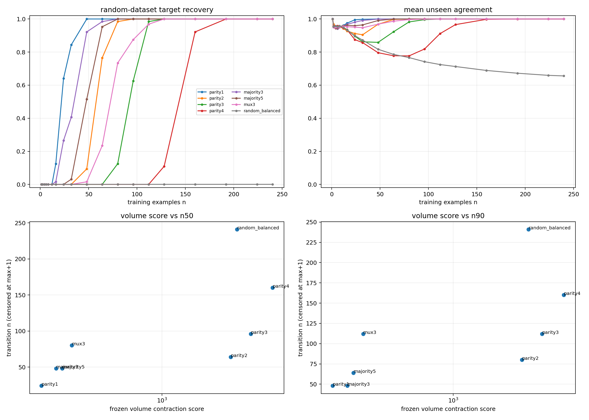
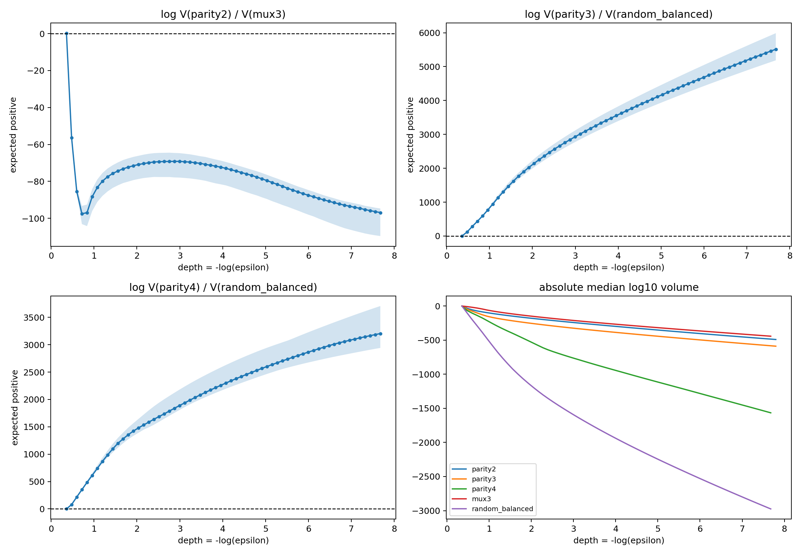
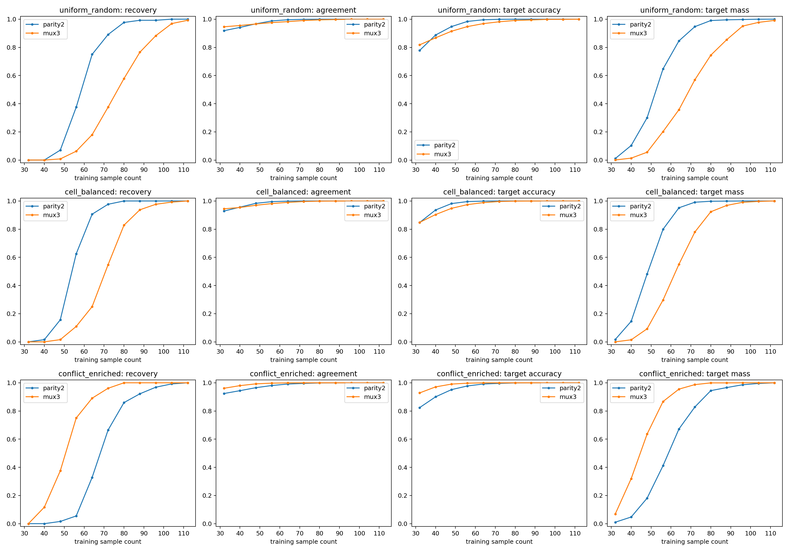
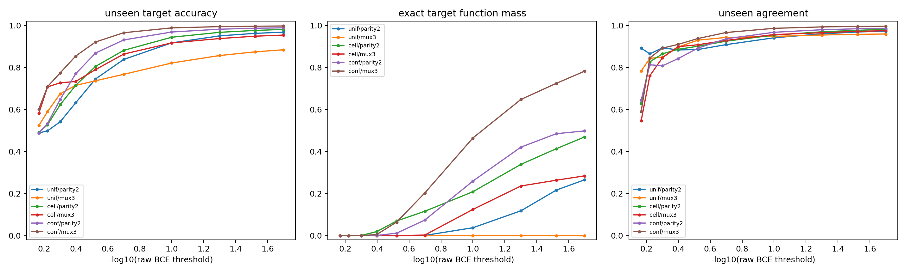

Experiment overview
Stage A uses full 256-state truth tables and constrained SMC for eight balanced 8-bit rules under a 8 -> 16 x 2 -> 1 tanh network. A preregistered contraction score and rank are hashed before Stage B. Stage B trains 19 nonfull sample sizes × 8 rules × 64 random datasets, plus full-data qualification controls, with 24 paired seeds per dataset.
Three follow-ups close the sole stable parity2/MUX3 mismatch: a shared-parent five-target Gaussian deep-tail SMC; a 270,336-model uniform/cell/conflict sampling intervention; and a 48-condition fixed-$D$ Gaussian SMC under the same three sampling protocols.
Why this experiment was run
Defining low volume as difficulty is not predictive by itself. An independent sample-complexity measurement is required. The nested parity family is the confirmatory target; all eight rules form a cross-family stress test.
Results, interpretation, and limits
The frozen parity ranking exactly predicted transition order: n50 values 24, 64, 96, 160 and n90 values 48, 80, 112, 160 for parity1–4. Transition intervals did not overlap; within-family Spearman correlation was 1.
Because every shared sample count already has 64 random datasets, continuous agreement can refine the coarse grid. A post-hoc target-aligned agreement=0.99 interpolation with 2,000 dataset-bootstrap replicates estimated parity2 at 59.98, MUX3 at 69.47, parity3 at 88.94, parity4 at 151.93, and random-balanced above 240. The parity2/MUX3 95% intervals were disjoint. This is a resolution diagnostic rather than a replacement for the preregistered decision.
Across all eight rules, Spearman correlations were 0.898 and 0.868. The balanced random target’s contraction accelerated with depth and crossed parity3/4, raising profile-to-transition correlation to about 0.97/0.95. MUX3 remained the one stable exception: at the deepest shared Gaussian threshold, its complete-target volume exceeded parity2 by roughly 42 decimal orders even though uniform-random training recovered parity2 earlier.
Sampling intervention resolved the mechanism. Uniform parity2/MUX3 gave n50=64/80 and n90=80/104; strict eight-cell balancing gave 56/72 and 64/88; increasing MUX selector-conflict examples to 75% reversed the order to n50=72/56 and n90=88/72. Relative to uniform sampling, MUX3 moved 24/32 examples earlier while parity2 moved eight later at both thresholds. Two thousand paired-bootstrap replicates and every evaluated step from 500 through 40,000 preserved the direction.
Fixed-$D$ Gaussian SMC reproduced the reversal without an optimizer. At n=32, epsilon=0.02, uniform parity2/MUX3 exact-target masses were 0.266/0.000214, cell masses were 0.469/0.284, and conflict masses were 0.498/0.782. Uniform-MUX3 reached agreement 0.959 while almost never selecting the target; conflict-MUX3 made the target modal in 8/8 datasets. Uniform posterior accuracy was 0.993 on ordinary MUX cells but only 0.777 on selector-conflict cells; conflict enrichment raised the latter to 0.995.
Deep-tail lineages fell to roughly one or two per replica, so absolute decimals are coarse. The qualitative decision rests on direction across loss thresholds, all eight datasets for conflict-versus-uniform MUX3, replica support, the causal intervention, and the independent optimizer result.
Conclusion. Full-rule Neural K-profile is a strong first-order predictor, exact within the preregistered parity family, but n50/n90 is a separate protocol-relative identification/recovery complexity. Cross-family prediction additionally requires the fixed-$D$ competitor denominator, sampling coverage, and optimizer transport. The MUX3 reversal is already present statically; AdamW is not required to create its qualitative direction.



